Next: Derivative of the arc Up: Differentials Previous: Definitions Contents Index
In the Differential Calculus we are usually concerned with the derivative, that is, with the ratio of the differentials 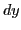 and 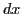. In some applications it is also useful to consider as an infinitesimal (see §3.3), that is, as a variable whose values remain numerically small, and which, at some stage of the investigation, approaches the limit zero. Then by (9.2), and item 2 in §3.8, is also an infinitesimal.
In problems where several infinitesimals enter we often make use of the following
Proof:
Let  , , 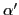, 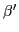 be
infinitesimals so related that
, , 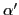, 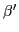 be
infinitesimals so related that
Now let us apply this theorem to the two following important limits.
For the independent variable  , we know from the previous
section that and are identical.
Hence their ratio is unity, and also limit
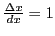. That is, by the above theorem,
In the limit of the ratio of and a second infinitesimal,
may be replaced by .
, we know from the previous
section that and are identical.
Hence their ratio is unity, and also limit
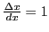. That is, by the above theorem,
In the limit of the ratio of and a second infinitesimal,
may be replaced by .
On the contrary it was shown that, for the dependent variable  ,
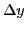 and are in general unequal. But we shall now show, however,
that in this case also
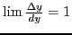.
Since
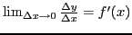
we may write
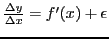,
where is an infinitesimal which approaches
zero when
,
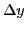 and are in general unequal. But we shall now show, however,
that in this case also
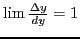.
Since
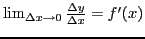
we may write
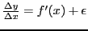,
where is an infinitesimal which approaches
zero when
 .
.
Clearing of fractions, remembering that , 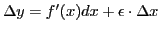, or 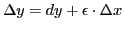, by (9.2). Dividing both sides by , 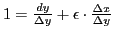, or 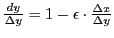. Therefore, 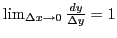, and hence 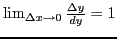. That is, by the above theorem, In the limit of the ratio of and a second infinitesimal, may be replaced by .
david joyner 2008-08-11